30대 남성 · 허리 디스크
좌측 디스크
탈출 감소
치료추나 요법|약침
Case 01
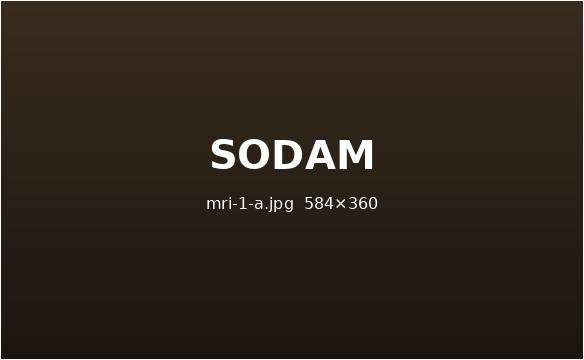
좌측 디스크 탈출 감소
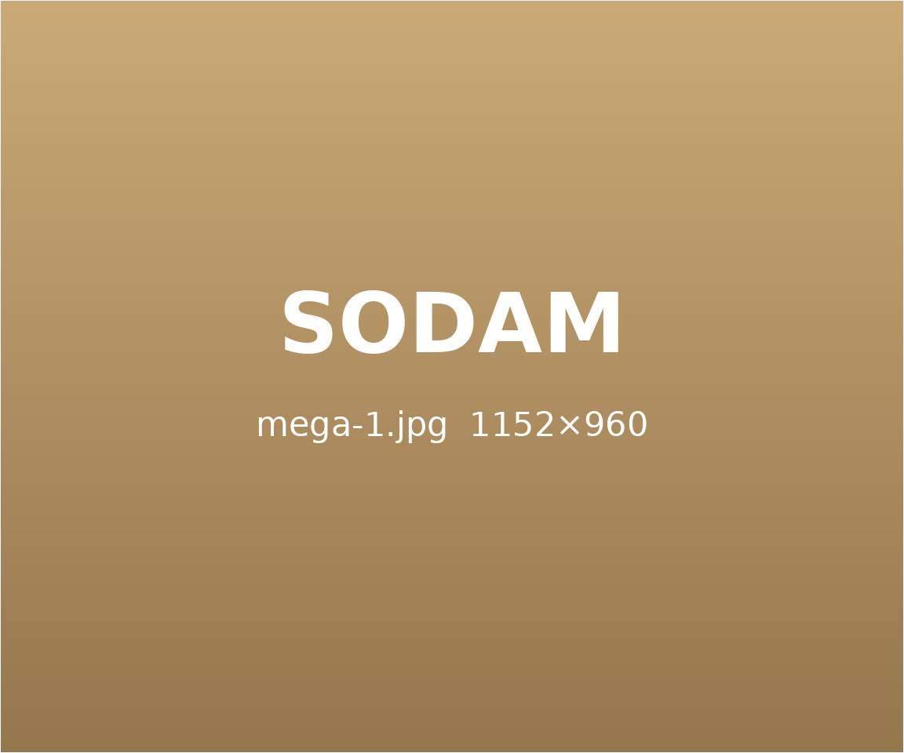
교통사고 후유증
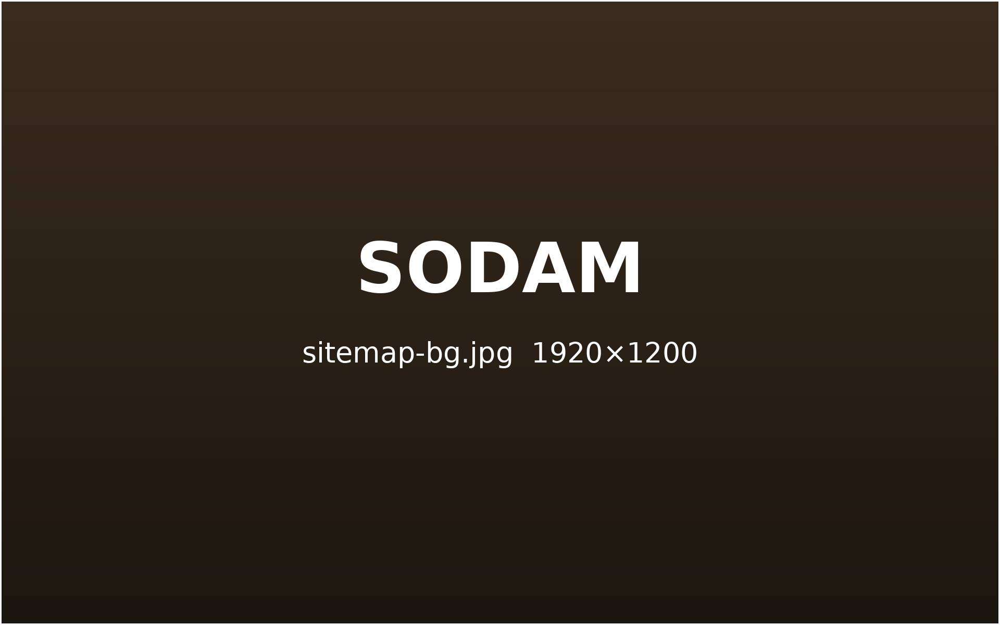
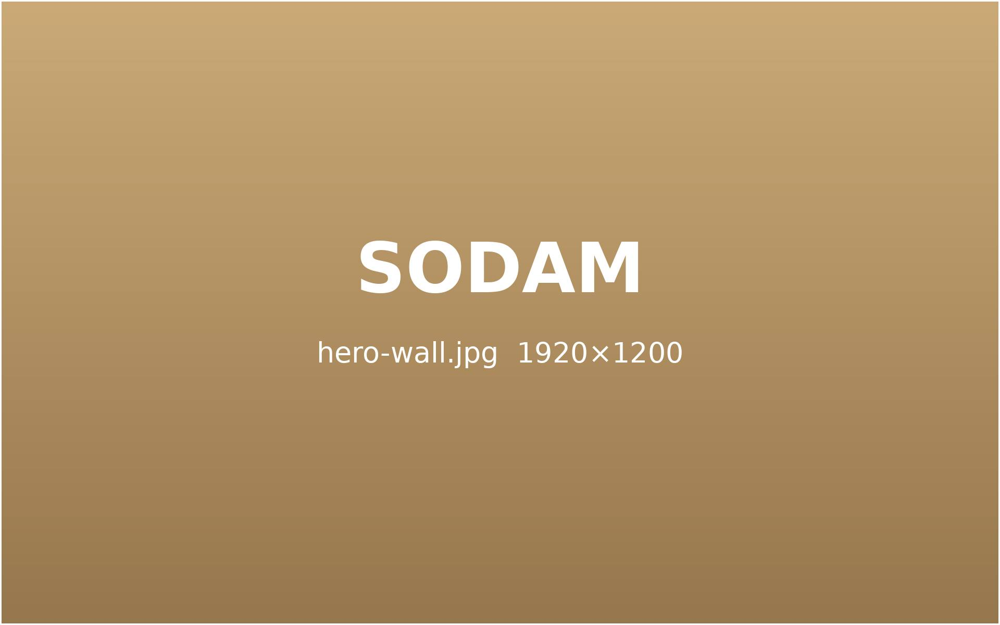
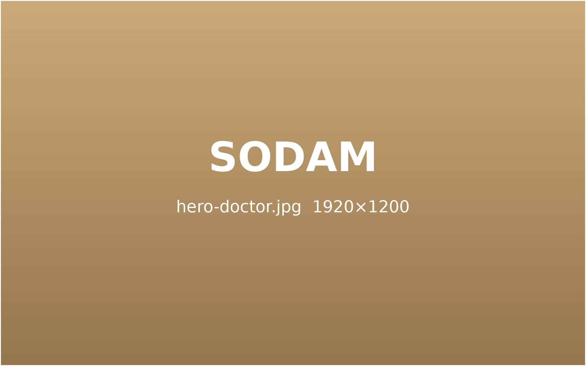
원인은 더 깊이, 치료는 더 섬세하게
천천히 들여다보고 나면 회복의 속도가 달라집니다.
Sodam Korean Medicine Clinic
Differentiation 01
Differentiation 02
Differentiation 03
Differentiation 04
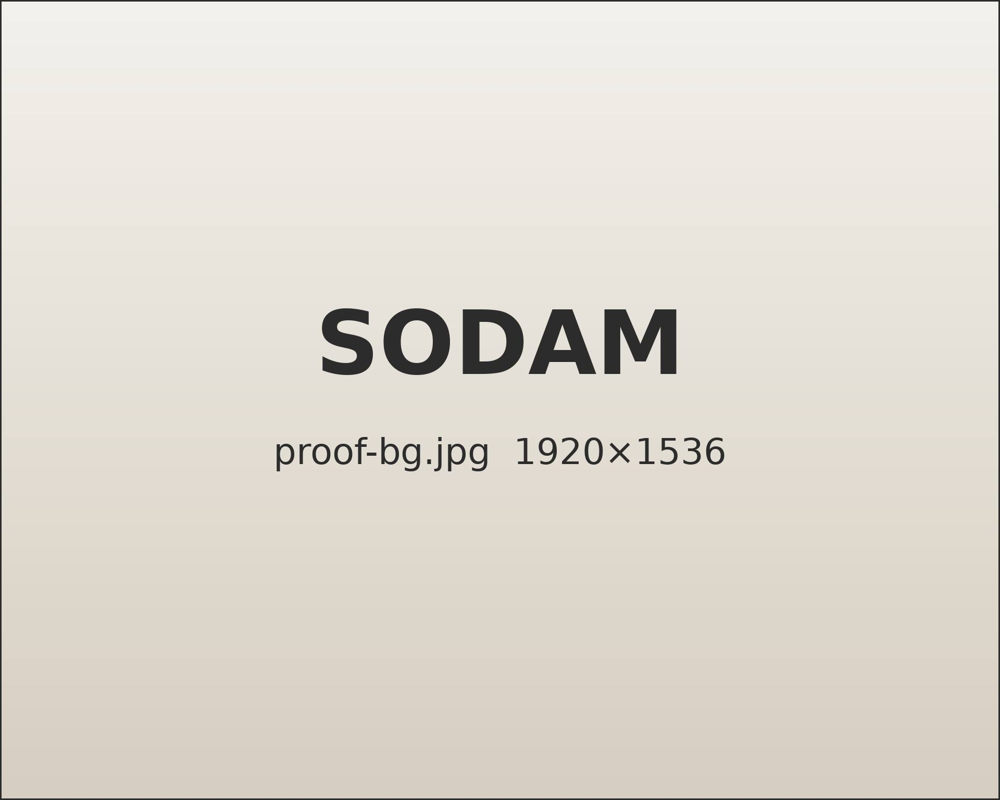
정확한 진단과 세밀한 치료로 수술 없이 통증과 불편을 줄여 갑니다.
영상으로 확인한 치료 전 · 후의 변화, 작은 차이가 결과를 바꿉니다.
궁금한 사례에 마우스를 올려 보세요.
30대 남성 · 허리 디스크
치료추나 요법|약침
Case 01

좌측 디스크 탈출 감소
40대 여성 · 허리 디스크
치료추나 요법|약침
Case 02
디스크 돌출 감소
20대 남성 · 척추 측만
치료추나 요법|교정 치료
Case 03
척추 정렬 회복
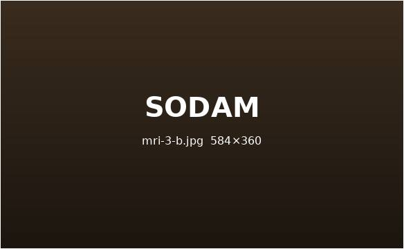
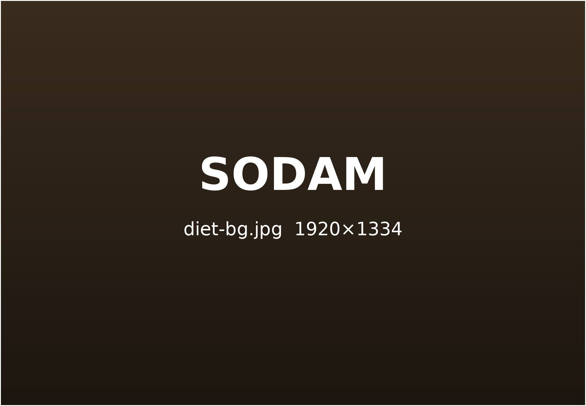
50대2개월여성
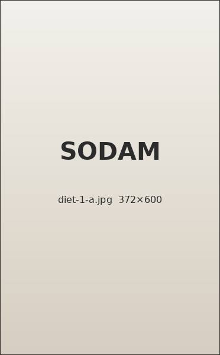
2개월 동안 3.9kg 감량
체중 3.9kg 감량체지방률 5.1% 감소
40대1개월여성
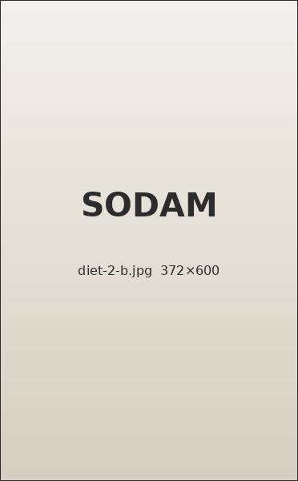
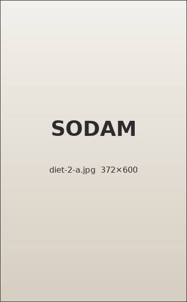
1개월 동안 4.1kg 감량
체중 4.1kg 감량체지방률 1.2% 감소
50대5개월여성
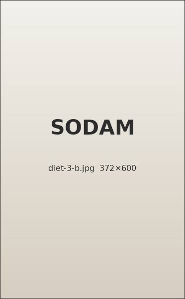
5개월 동안 8.2kg 감량
체중 8.2kg 감량체지방률 5.4% 감소
40대5개월여성
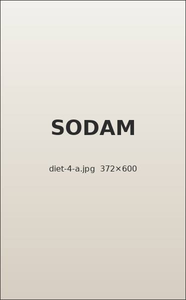
5개월 동안 6.0kg 감량
체중 6.0kg 감량체지방률 3.5% 감소
※ 환자 동의를 받아 게재하는 사례를 가정한 디자인 예시입니다. 수치는 예시이며 실제 치료 결과는 체질과 건강 상태에 따라 다를 수 있습니다.
치료 전 의료진과 충분히 상담하시기 바랍니다.
의료진 전원
근골격 초음파
교육 이수
100%
환자
재방문율
92%
예시 수치
6개월간 내원 환자 기준
환자
만족도
97%
예시 수치
자체 만족도 설문 기준
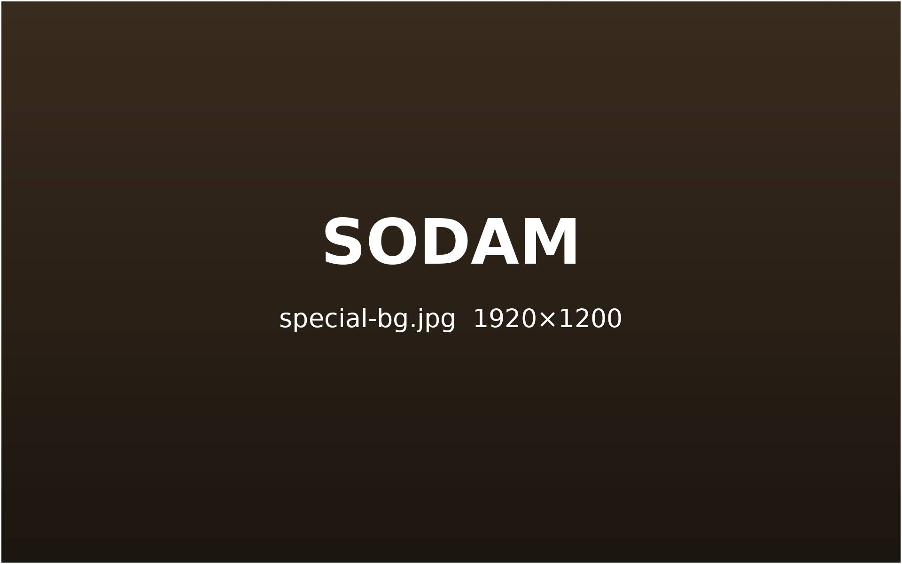
Special Sodam
모든 진료의 처음과 끝에는
‘대화’가 있습니다.
천천히 살피고 귀 기울여 듣고,
함께 방향을 정하는 것이
소담의 진료 방식입니다.
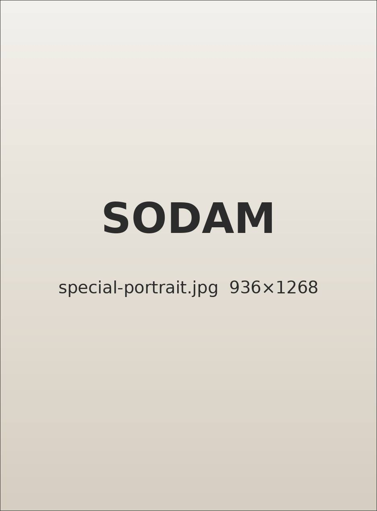
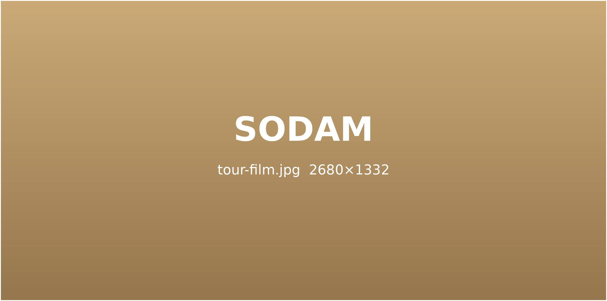
Sodam
KMC
머무는 동안에도 회복이 시작되는 공간
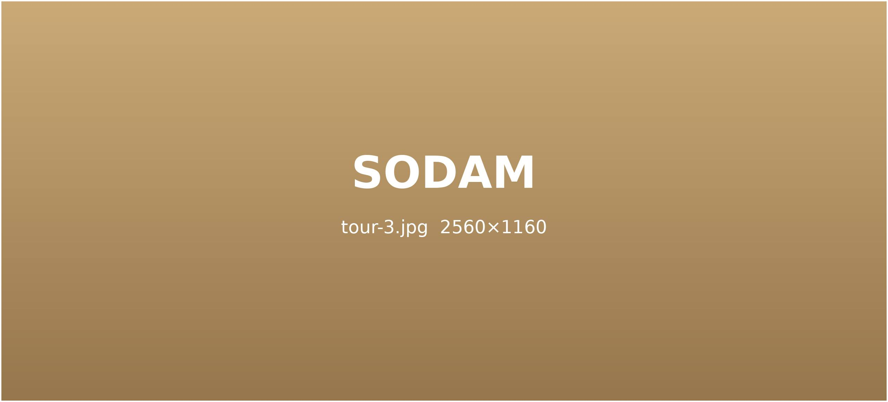
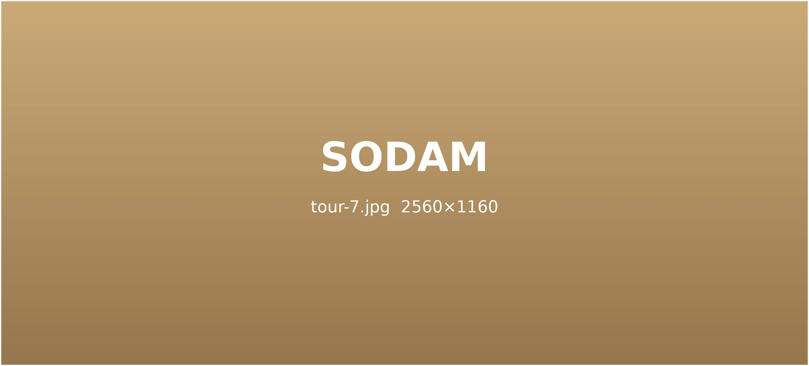
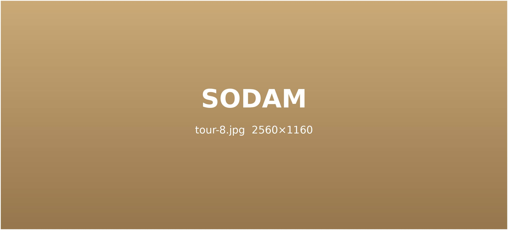
Sodam Story
26.09.18
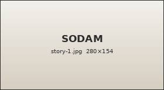
보라색에서 초록, 노란색으로 옅어지는 과정은 대부분 정상적인 흡수 과정입니다. 다만 붓기와 통증이 함께 커진다면 확인이 필요합니다.
26.09.05
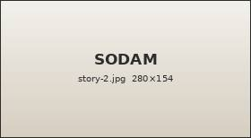
한쪽 다리가 길어 보이거나 오래 앉으면 엉덩이가 저리다면, 운동을 늘리기 전에 어느 쪽이 굳었는지부터 살펴야 합니다.
26.08.21
주말 내내 쉬었는데도 몸이 무겁다면 수면·소화·순환 중 어디가 막혀 있는지 차근차근 짚어 볼 때입니다.
26.08.07
사고 직후에는 긴장 때문에 통증을 잘 느끼지 못합니다. 2~3일 뒤 목과 허리가 뻐근해지는 경우가 흔한 이유입니다.
26.07.24
아프지 않은지, 몇 번 받아야 하는지, 보험이 되는지 — 상담실에서 가장 많이 듣는 질문을 모았습니다.
26.07.10
복약 기간에 자주 묻는 음식 이야기. 모두 끊을 필요는 없지만 시간 간격은 지켜 주시는 것이 좋습니다.
26.06.26
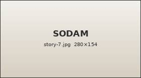
걸을 때마다 뒤꿈치가 찌릿하다면 밑창이 닳은 신발과 갑자기 늘린 운동량이 원인인 경우가 많습니다.
26.06.12
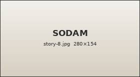
스쿼트와 데드리프트 뒤의 허리 통증은 무게보다 자세 문제일 때가 많습니다. 다시 시작하기 전 점검할 세 가지.